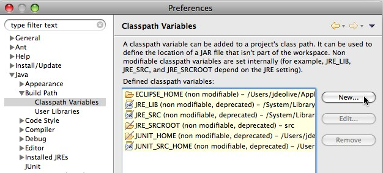
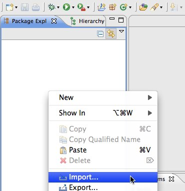
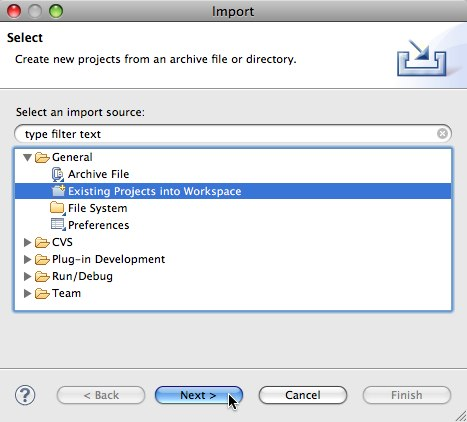
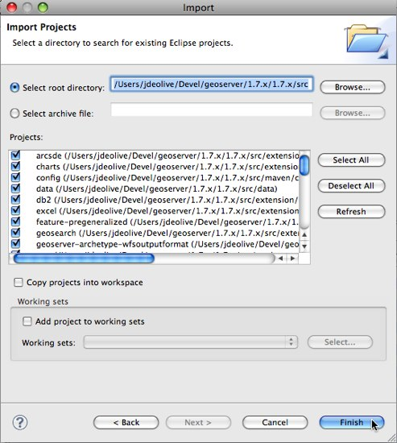

Maven Eclipse Plugin Quickstart¶
This guide is designed to get developers up and running as quick as possible. For a more comprehensive guide see the the Eclipse Guide.
Check out source code¶
Check out the source code from the git repository.:
git clone git://github.com/geoserver/geoserver.git geoserver
To list the available branches.:
% git branch
2.15.x
2.16.x
* master
Choose master for the latest development.:
% git checkout master
Or chose a stable branch for versions less likely to change often:
% git checkout 2.16.x
In this example we will pretend that your source code is in a directory
called geoserver, but a more descriptive name is recommended.
Generate Eclipse project files with Maven¶
Generate the eclipse .project and .classpath files:
mvn eclipse:eclipse
Import modules into Eclipse¶
Run the Eclipse IDE
Open the Eclipse
PreferencesNavigate to
Java,Build Path,Classpath Variablesand clickNew...Create a classpath variable named “M2_REPO” and set the value to the location of the local Maven repository, and click
OkClick
Okto apply the new Eclipse preferencesRight-click in the
Package Explorerand clickImport...Select
Existing Projects into Workspaceand clickNextNavigate to the
geoserver/srcdirectoryEnsure all modules are selected and click
Finish
{kind=link}
{kind=link}
{kind=link}
Run GeoServer from Eclipse¶
From the
Package Explorerselect theweb-appmoduleNavigate to the
org.geoserver.webpackageRight-click the
Startclass and navigate toRun as,Java Application
After running the first time you can return to the
Run Configurationsdialog to fine tune your launch environment (including setting a GEOSERVER_DATA_DIR).
Note
If you already have a server running on localhost:8080 see the Eclipse Guide for instructions on changing to a different port.
Run GeoServer with Extensions¶
The above instructions assume you want to run GeoServer without any extensions enabled. In cases where you do need certain extensions, the web-app module declares a number of profiles that will enable specific extensions when running Start. To enable an extension, re-generate the root eclipse profile with the appropriate maven profile(s) enabled:
% mvn eclipse:eclipse -P wps
The full list of supported profiles can be found in src/web/app/pom.xml.
Access GeoServer front page¶
After a few seconds, GeoServer should be accessible at: http://localhost:8080/geoserver
The default
adminpassword isgeoserver.